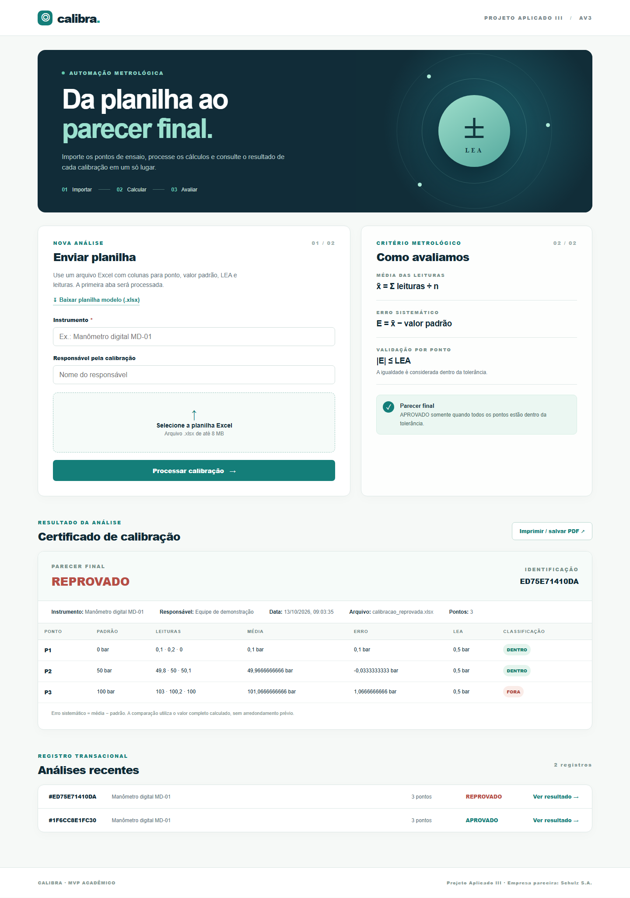

Construção da aplicação transacional do MVP
Unidade curricular: Projeto Aplicado III
Docente: Prof. MSc. Hugo Menezes Barra
Empresa parceira: Schulz S.A.
Aplicação: Calibra
Equipe / integrantes: ______________________________________________
Instituição / turma: _________________________________________________
13 de outubro de 2026
Foi desenvolvido um MVP web para importar leituras de calibração em arquivo Excel (.xlsx), calcular os indicadores por ponto de ensaio e apresentar um parecer final. O sistema registra cada processamento e permite consultar resultados anteriores.
O parecer final é APROVADO somente quando todos os pontos estão dentro da tolerância. Se ao menos um ponto estiver fora, é REPROVADO. A comparação utiliza o resultado numérico antes de qualquer redução visual de casas decimais.
A aplicação foi executada localmente. Uma planilha modelo foi enviada para o endpoint de processamento e produziu um certificado com três pontos aprovados. Em seguida, alterou-se uma leitura no terceiro ponto para verificar a reprovação.
Figura 1 — Resultado APROVADO com os três pontos dentro do LEA. ID 1F6CC8E1FC30.

Figura 2 — Resultado REPROVADO com P3 fora do LEA. ID ED75E71410DA.
| Cenário | Ponto | Padrão | Média | Erro | LEA | Classificação |
|---|---|---|---|---|---|---|
| Aprovado | P1 | 0 bar | 0,1 bar | 0,1 bar | 0,5 bar | Dentro |
| Aprovado | P2 | 50 bar | 49,9667 bar | −0,0333 bar | 0,5 bar | Dentro |
| Aprovado | P3 | 100 bar | 100 bar | 0 bar | 0,5 bar | Dentro |
| Reprovado | P3 | 100 bar | 101,0667 bar | 1,0667 bar | 0,5 bar | Fora |
Os valores nesta tabela foram abreviados para leitura. O backend preserva a precisão Decimal na decisão. Os dois arquivos XLSX e as respostas JSON completas acompanham o projeto em exemplos/ e evidencias/.
O comando python -m unittest discover -s tests -v foi executado no projeto. Resultado: 8 testes, 8 aprovados.
| Verificação | Resultado observado |
|---|---|
| Modelo aprovado e erro negativo | OK |
| Um ponto fora reprova o certificado | OK |
| Erro absoluto igual ao LEA | OK — dentro |
| LEA negativo, fórmula e arquivo inválido | OK — rejeitados |
| Envio HTTP, persistência e consulta | OK — 201 e 200 |
| XLSX inválido enviado à API | OK — 400 |
1. Execute python server.py na pasta do projeto.
2. Abra http://127.0.0.1:8000 e baixe a planilha modelo.
3. Informe o instrumento, selecione o XLSX e clique em “Processar calibração”.
4. Consulte a classificação por ponto, o parecer final e o histórico.
Link público do grupo: ______________________________________________
O código-fonte, os exemplos de planilha, os testes e as capturas de evidência estão organizados na pasta do projeto para publicação no GitHub.
O MVP demonstrou a ingestão de planilhas, o processamento das regras de negócio e a geração de pareceres coerentes nos cenários aprovado e reprovado. A persistência permite recuperar o certificado após a transação.
Os dados de exemplo são sintéticos e servem para demonstrar o funcionamento do software. O sistema acadêmico não implementa incerteza de medição, rastreabilidade formal ou assinatura de laboratório.